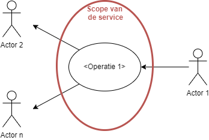
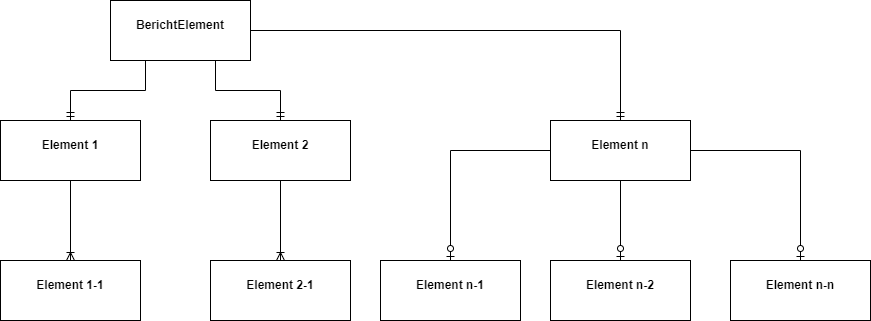
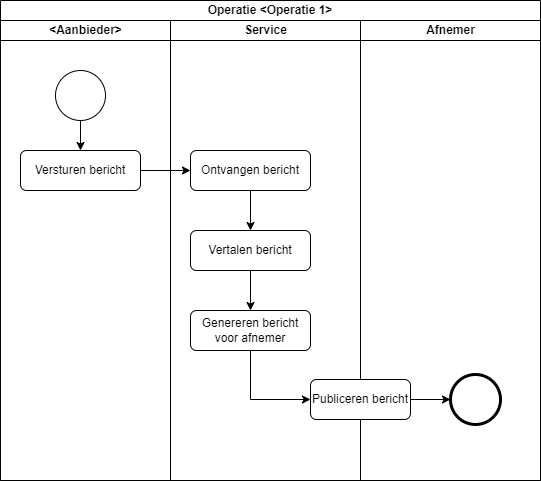

ServiceSpecificatie
Template Service Specificatie¶
Service overzicht¶
| Item | |
|---|---|
| Servicenaam | |
| Serviceversie | |
| Service beschrijving | |
| Opmerkingen | |
| Datum in productie | |
| Datum vervallen | |
| Service eigenaar | Naam van de eigenaar, e-mailadres, afnemer |
| Afname locatie | ESB Post21, PIADD, KA (verwijder wat niet van toepassing is) |
Roadmap¶
Voor de service staan de volgende wijzigingen op de planning: - geen wijzigingen gepland
Service Abstract¶
Kort en bondige beschrijving van de service
Servicecontext¶
Context van de service in woord en beeld

Service operaties¶
Operatie 1¶
Omschrijving¶
Functionaliteit van de operatie
Trigger¶
Geef aan waardoor de service getriggert wordt, bijvoorbeeld Ontvangst bericht
Interface beschrijving¶

Figuur 1 Samenhang berichtelementen van Operatie 1, voor het XML bericht zie Appendix A
Interactie patroon¶
Deze service werkt volgens het volgende patroon:
- In-Only (one-way)
- In Out (Synchroon, Request-Response)
- In Out (Asynchroon, Request-Response)
- Out Only (Notification)
- Out In (Solicit-Response)
Observeerbaar gedrag¶

Basis flow (happy flow)
1.
Alternatieve flows
Geef aan of er andere scenario’s mogelijk zijn
Exceptie flows
Geef aan hoe de service met excepties omgaat
Security¶
Geen additionele beveiligingsmaatregelen nodig buiten de standaard ESB maatregelen. OF Deze service maakt gebruik van WS Security | Basic Authentication.
Performance¶
| Karakteristiek | Omschrijving |
|---|---|
| Avg # Requests | |
| Max # Requests | |
| Avg Latency (sec) | < |
| Max Latency (sec) | |
| Peaktime | |
| Avg Message size | |
| Max Message size | |
| Quality of Service | - Best Effort |
| - At Least Once | |
| - Exactly Once |
Document informatie¶
Referenties¶
| Referentie | Document |
|---|---|
| CDM | ProRail CDM - Richtlijnen en Beheer |
| AUTH-BRON | Authentieke bronnen en eigenaarschap gegevens, IB en ICT-S/AI&B |
| AUTH-BRON-LIJST | Lijst authentieke bronnen en gegevenseigenaren, IB en ICT-S/AI&B |
| PIA | ProRail Integratie Architectuur |
| SD |
Afkortingen¶
| Term | Betekenis |
|---|---|
| ESB | Enterprise Service Bus |
Versiebeheer¶
| Versie | Datum | Auteur | Wijzigingen |
|---|---|---|---|
| dd-mm-jjjj |
Schema's¶
Bericht ¶
CMM XSD¶
op aparte tab